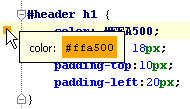

&productName; simplifies your work with colors in CSS files. The color properties have the icons of the corresponding color in the left gutter area of the editor. Use these icons to view and change colors.
When you hover over the color icon, a popup window appears showing the color and its code:

Double-click the color icon to choose the desired color from the color picker dialog box.